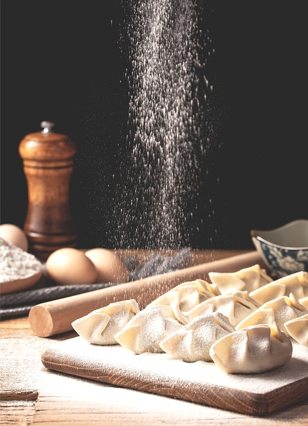

Pierogi

Description:
Pierogi are traditional Eastern European dumplings that bring a taste
of home to your table. This recipe features a simple yet delicious
filling made from creamy mashed potatoes, rich cheese, and sautéed onions,
all wrapped in a soft, homemade dough. The dough is easy to prepare, combining flour, egg, sour cream, and butter for a tender texture.
After boiling, the pierogi are pan-fried until golden brown, adding a delightful crispiness to each bite.
Serve them hot with a dollop of sour cream for a classic touch. Whether enjoyed as a main dish or a side,
these Pierogi are a beloved comfort food that will delight family and friends alike!
Ingredients:
- 2 cups all-purpose flour
- 1 large egg
- 1/2 cup sour cream
- 1/4 cup butter, softened
- 1/2 teaspoon salt
- 1 cup mashed potatoes (prepared)
- 1 cup shredded cheese (cheddar or farmer's cheese)
- 1 onion, finely chopped
- Butter or oil for frying
- Sour cream for serving
Instructions:
- In a large bowl, combine the flour and salt. Make a well in the center and add the egg, sour cream, and softened butter. Mix until a dough forms.
- Knead the dough on a floured surface for about 5 minutes until smooth. Cover with a towel and let it rest for 30 minutes.
- In a skillet, sauté the chopped onion in a little butter or oil until golden brown. Mix the sautéed onion with the mashed potatoes and cheese. Season with salt and pepper to taste.
- Roll out the dough on a floured surface to about 1/8 inch thick. Cut out circles using a round cutter or glass (about 3 inches in diameter).
- Place a spoonful of the potato and cheese filling in the center of each circle. Fold the dough over to create a half-moon shape and pinch the edges to seal.
- Bring a large pot of salted water to a boil. Drop the pierogi in batches and cook for about 3-5 minutes, or until they float to the surface. Remove with a slotted spoon.
- In a skillet, heat some butter or oil over medium heat. Fry the boiled pierogi until golden brown on both sides.
- Serve hot with sour cream on the side.